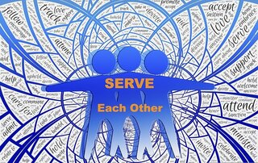
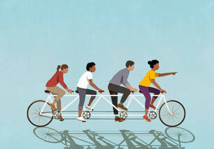

GIVE & RECEIVE
Instead of selling" or "throwing away" what we no longer use, why not give it away. More and more people want to change the way they consume. Sometimes you need something, but you can also give to someone. How many items have been sitting in your closet for a long time? Instead of throwing away or letting something go to sleep that you don't need, why not give it away? Why not take a second-hand item instead of buying something you may not use much. You want to give something (material, toys, clothes, furniture, surplus vegetables from the garden etc.) propose it on our site.
LEARN FROM OTHERS
Share your knowledge, your skills or your time.Tell us what you can do, ask for the help you need. We all have knowledge, skills or time that we can share with others in a world where helping each other is necessary. Here you can offer your help or ask for it. Asking for help is not always easy with this website we want to make the application easier. Someone can help you for example to paint your kitchen or to fix something at home. You would like someone to read for you, why don't you ask for it. You need help for your move, ask here. Many opportunities for self-help can be shared on this site. Many opportunities to help and be helped can be shared on this site.

LEND & BORROW
Some people buy equipment to fix something or to cook with and use it very little. Why let it gather dust when it could be useful to someone. If you just need some materials to fix your shelf but don't want to buy a drill because you know you'll only use it once, come here and see if anyone can lend you one. Your hobby is reading but you don't have a library near you, or you want to share the latest book you read because you love it.